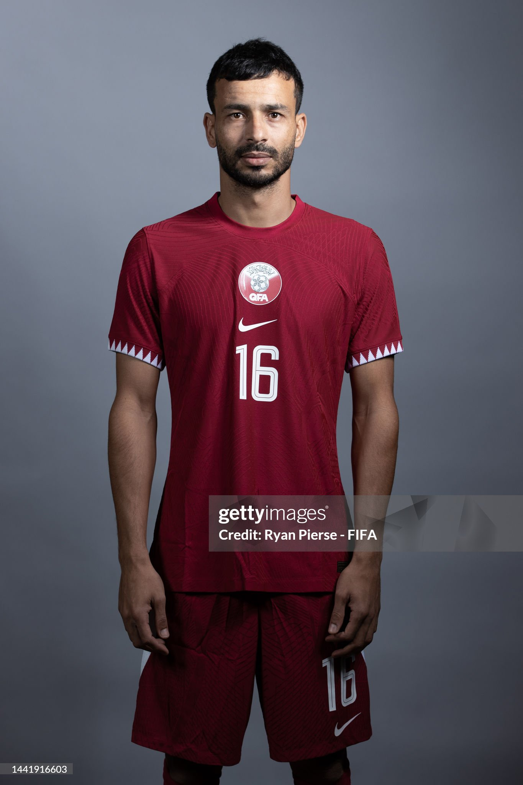
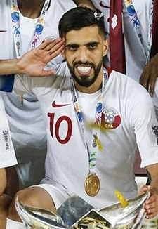

| Nombre | Posición | Edad | Bibliografía | Portada |
|---|---|---|---|---|
| Saad Al-Sheeb | Portero | 32 |
Portero titular de Qatar, destacado por sus reflejos y seguridad en el arco. Figura clave en torneos internacionales recientes. |
|
| Abdelkarim Hassan | Lateral izquierdo | 31 |
Versátil defensor con capacidad ofensiva. Capitán en varios partidos y pieza clave en el equipo nacional. |
|
| Boualem Khoukhi | Defensa central | 33 |
Defensor experimentado, sólido en marca y juego aéreo. Ha sido fundamental en la defensa de Qatar. |
 |
| Bassam Al-Rawi | Defensa central | 28 |
Joven defensa central, rápido y fuerte. Ha destacado en competiciones locales e internacionales. |
|
| Pedro Miguel | Defensa central / Lateral | 30 |
Jugador polivalente en defensa. Puede actuar tanto en el centro como en los laterales, aportando solidez al equipo. |
|
| Ali Afif | Extremo derecho | 32 |
Jugador ofensivo por la banda derecha, destaca por su velocidad y desborde. Importante en los ataques de Qatar. |
|
| Akram Afif | Delantero / Extremo izquierdo | 28 |
Figura ofensiva del equipo, conocido por su habilidad y capacidad goleadora. Ha marcado la diferencia en torneos internacionales. |
|
| Hassan Al-Haydos | Delantero / Capitán | 34 |
Capitán y referente de Qatar. Experiencia, liderazgo y olfato goleador lo hacen indispensable en el equipo. |
 |
| Mohammed Muntari | Delantero | 30 |
Delantero potente y rápido, ha aportado goles importantes en la selección. Es clave en el ataque catarí. |
 |
| Karim Boudiaf | Mediocampista defensivo | 34 |
Mediocentro sólido, aporta equilibrio defensivo y experiencia en el medio campo. Vital en la recuperación de balón. |
|
| Abdulaziz Hatem | Mediocampista | 31 |
Mediocampista creativo, destaca por su visión de juego y capacidad para asistir a los delanteros. Figura importante en Qatar. |
 |
| Edmilson Junior | Extremo izquierdo / Delantero | 27 |
Jugador rápido y habilidoso, naturalizado catarí. Su velocidad y regate lo hacen un recurso ofensivo muy valioso. |